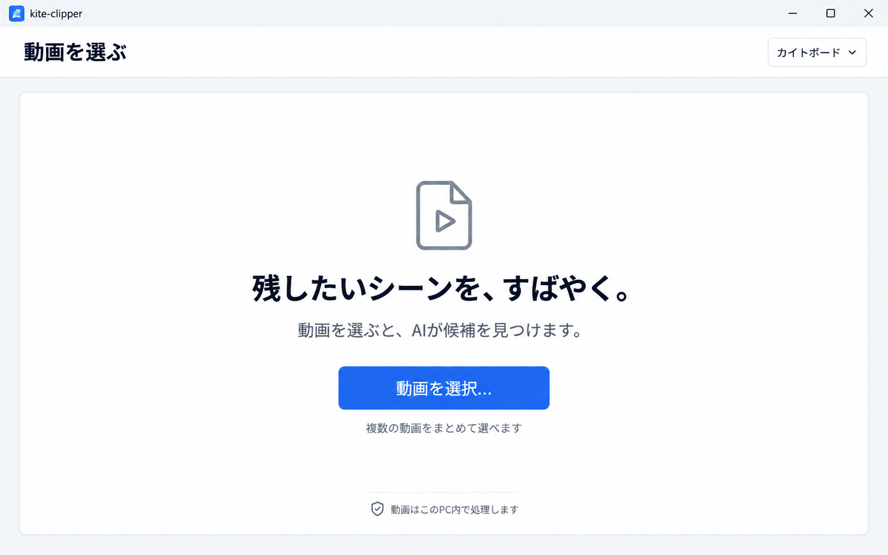
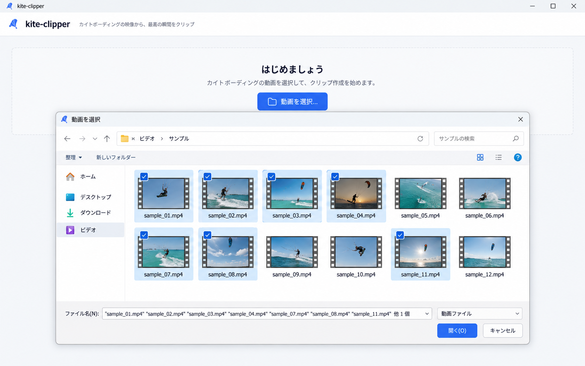
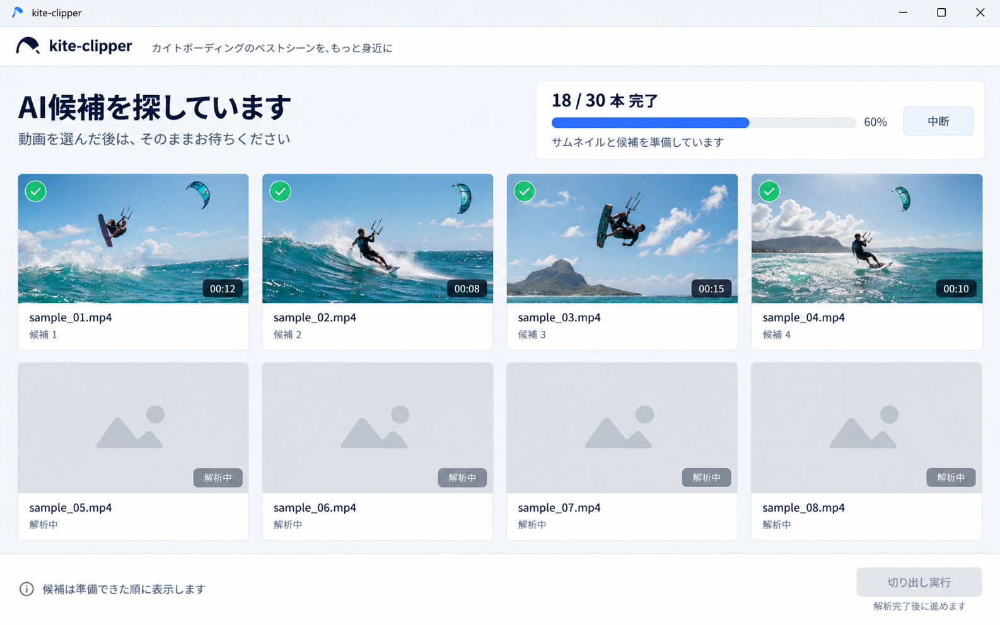
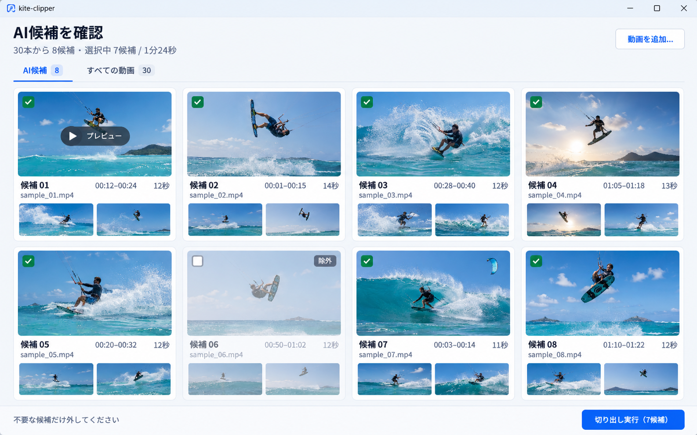
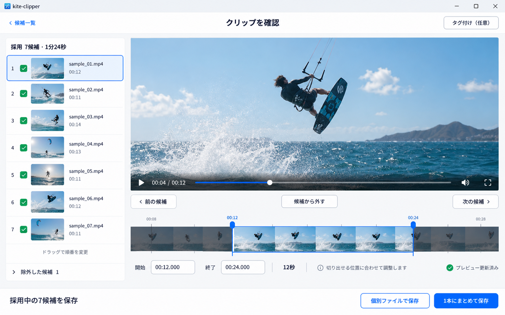
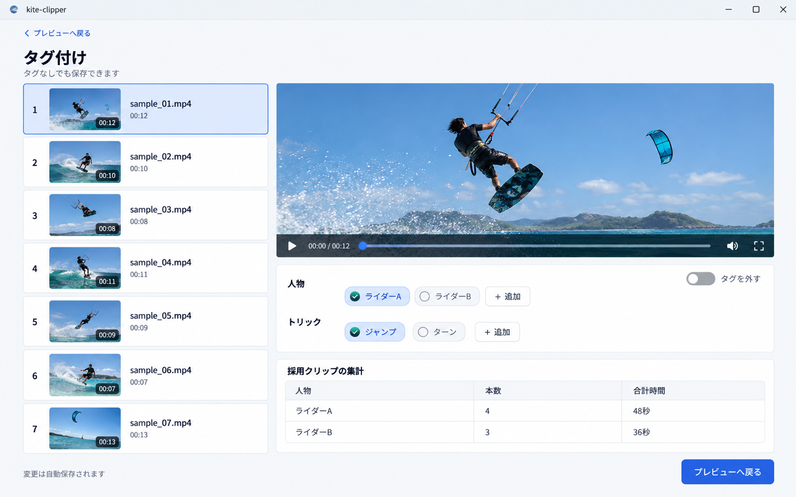
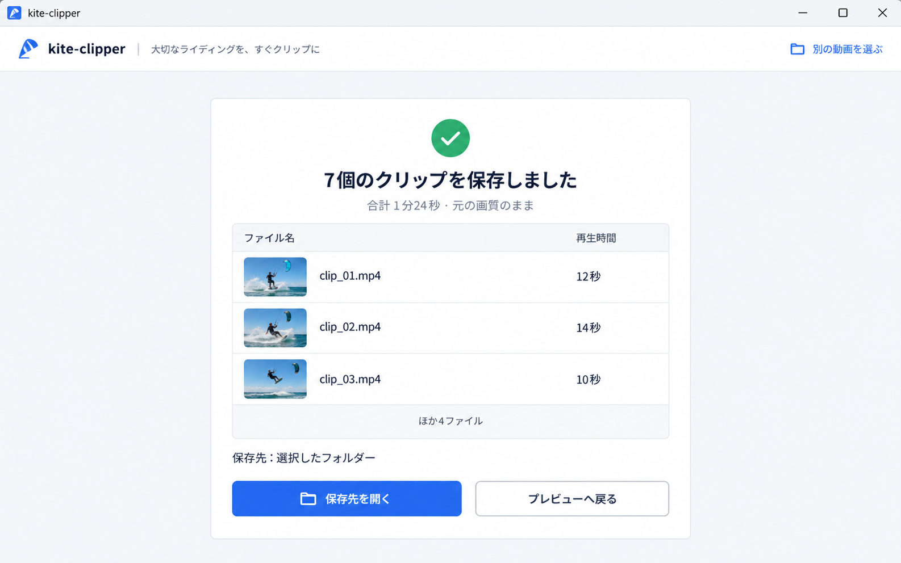
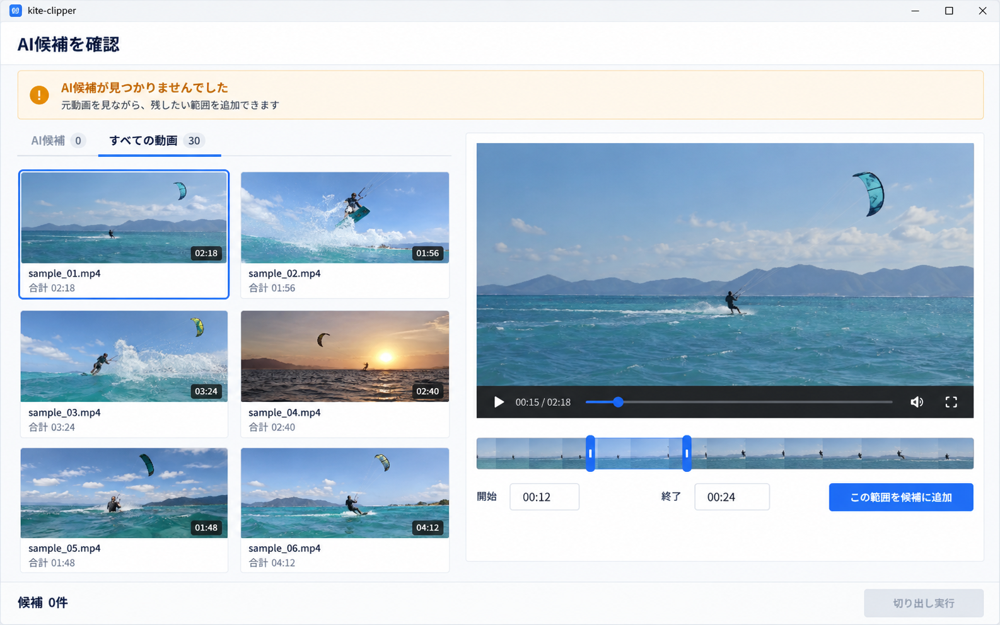
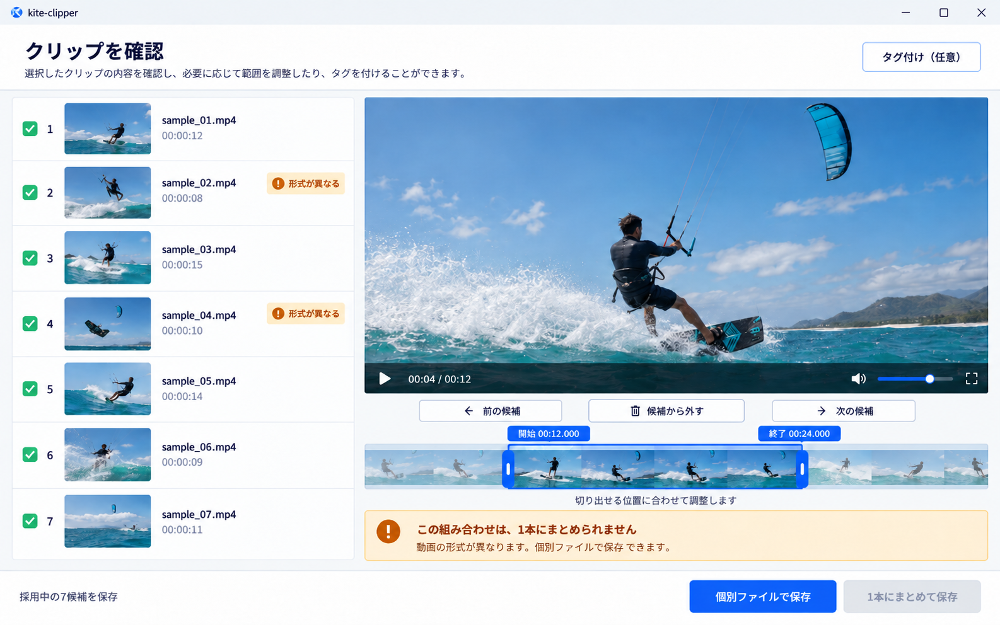
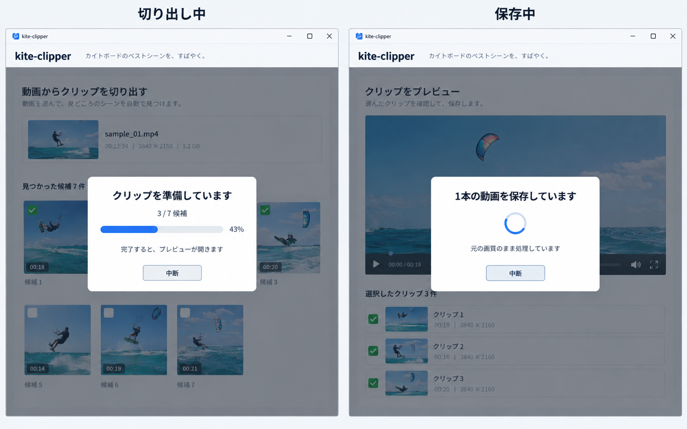

画面・状態 1 / 10動画を選ぶ
入口は「動画を選択…」だけ。写真の追加・分析・一覧を廃止します。

画面・状態 2 / 10ファイル選択ダイアログ
Windows標準ダイアログで複数の動画を選択。「開く」で自動解析へ進みます。

画面・状態 3 / 10自動解析中
同じ候補画面内でサムネイル生成・AI採点・区間提案を連続実行します。

画面・状態 4 / 10AI候補をざっくり確認
初期状態は候補を仮採用。不要な候補だけ外し、「切り出し実行」で進みます。

画面・状態 5 / 10動画プレビュー・範囲調整・保存
この画面が中心です。候補切替、除外、並べ替え、範囲調整と2種類の保存を集約します。

画面・状態 6 / 10タグ付け（任意）
主画面のボタンからのみ遷移。人物・トリックを付け、自動保存して同じ候補へ戻ります。

画面・状態 7 / 10保存完了
個別保存の例。結合時は「1本の動画を保存しました」に切り替えます。

画面・状態 8 / 10候補ゼロ・手動での追加
「すべての動画」内で元動画を確認し、範囲を候補へ追加できます。

画面・状態 9 / 10高速コピーで結合できない場合
同じ主画面内で理由を案内。個別保存は可能。再エンコードには自動移行しません。

画面・状態 10 / 10切り出し中・保存中
処理中の重ね表示2状態。新しい工程ページにはせず、完了すると自動で進みます。
